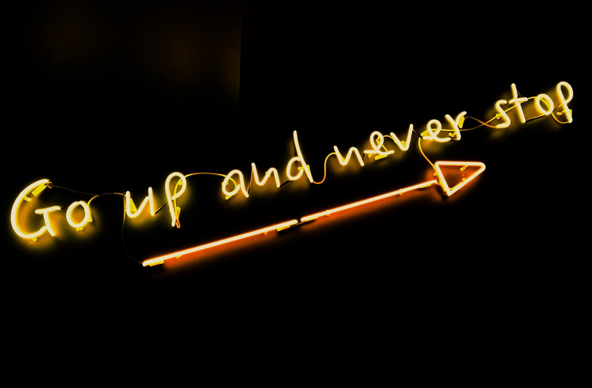

Skills Required for Young people in the future
You all must be baffled by the unknown future as I am right now. And that is why I have gathered courage to sit down and look at what the future holds for me and people like me in the days ahead. So, what do you think what skills will give you the much needed acceleration required for a great career and a happy life. In the days ahead we will tackle these questions together and come to a solution. But sitting on this chair and typing my life ahead, I can only imagine a place where there is compassion, trust and unbelievable amount of love. All these factors would enhance one’s emotional intelligence or emotional quotient. You might be wondering what emotional intelligence is? It is a critical factor that sets high performers apart from the average ones, as it allows you to focus your energy in one direction obtaining incredible results. In short, Emotional intelligence (often referred as EQ) is the ability of a person to recognize their own, and other people’s emotions, to differentiate between different feelings and act accordingly. Emotional quotient is the strongest predictor of performance as compared to other workplace skills.
Also, I think skills that will be most important for the future will have a lot to do with self and how well you can manipulate the technologies around you. Self-discipline is very important, as without this you might not be able to function within the new norm or working from home. Time management is another skill needed to get the most out of a day and your abilities. With most things being conducted online, one must embrace technology and be able to adapt well to different scenarios and situations. Most importantly people should be able to communicate effectively.  I’d like to encourage everyone to stay motivated with pursuing your endeavors, despite the challenges you face. Things may not make a lot of sense right now, but they eventually will. Take this opportunity to learn new and different skills to make yourself more marketable. The more skills you have the better you’ll be able to cope and adapt as things keep changing. Remember no man is an island, seek help if you’re feeling depressed, talk to others about your issues. Surround yourself with positive minded people and keep feeding your mind positive thoughts. This isn’t the end, it’s a new beginning for us all. Focus on the step infront of you, take things day by day and if that’s too much, go hour by hour or minute by minute. Never give up on yourself, believe in your abilities, stay positive and KEEP GOING!
THIS IS JUST THE BEGINNING...
THANK YOU!